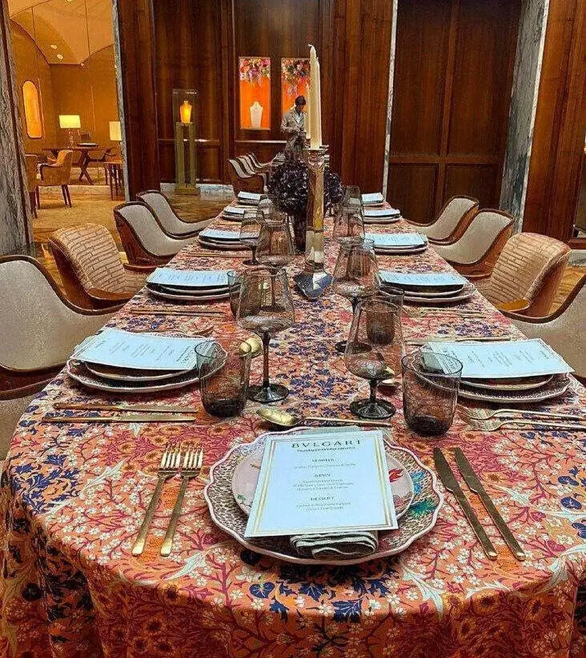
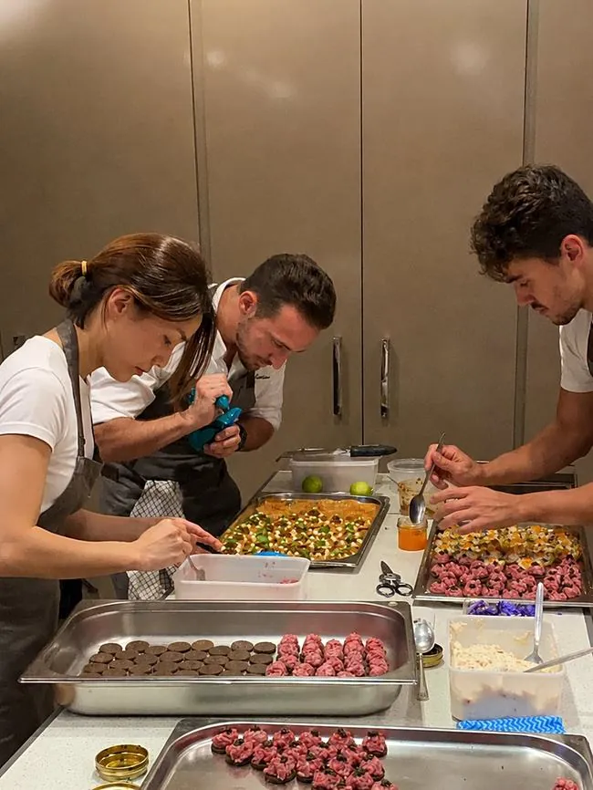
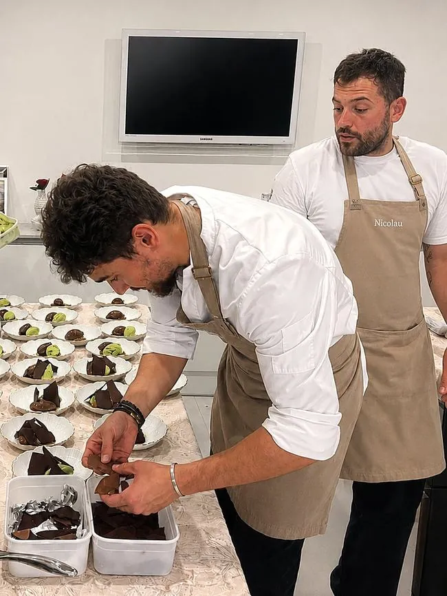
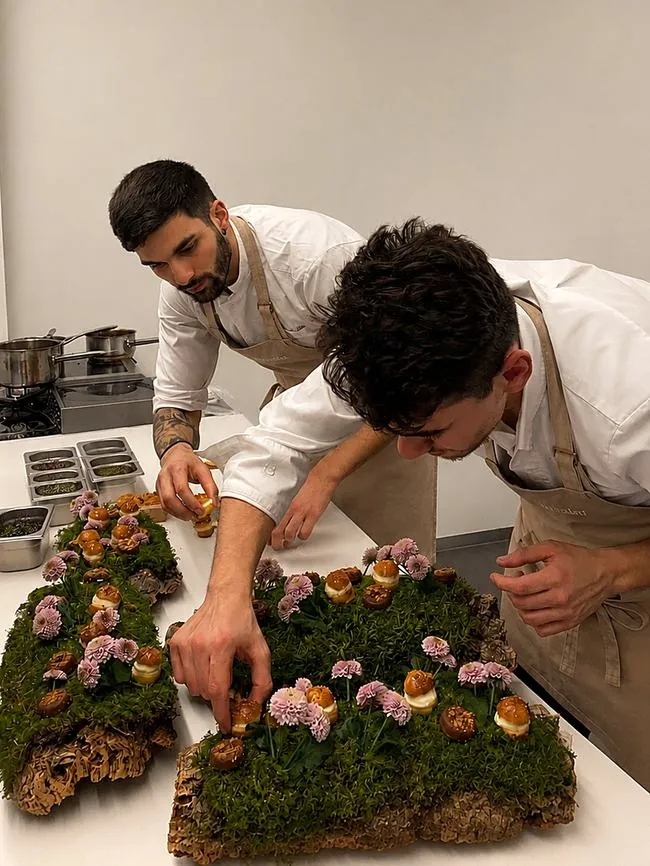
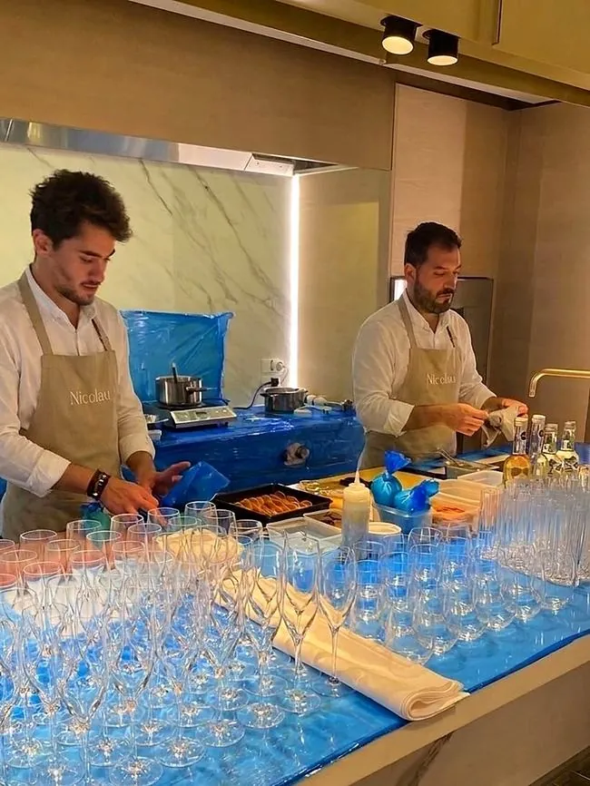

Reviews & Trust
UHNW families, yacht owners and luxury brands who have trusted their table to Alejandro.
Verified reviews via Yhangry
Clients Who Return
A selection of verified reviews from real bookings, birthdays, weddings, hen dos and family dinners.
"Alejandro was professional, the food was incredible, overall it made for an amazing evening! We tried some of the most amazing delicacies executed with such care, the mantao bread (to name one of many) was phenomenal."
Emmie · 7 guests
"Perfect from start to finish. Alejandro provided an amazing menu initially and took my suggestions and requests onboard. He was engaging, supremely competent and made loads of excellent dishes. Everyone loved it."
Daniel · 5 guests
"10/10! Food was amazing, top restaurant standard. Alejandro was very organised and helped our event run smoothly. Would certainly book him again."
Lucy · 23 guests
"Excellent service from start to finish. We did nothing but sit at a beautifully laid table, eat delicious food and wave them goodbye after everything had been cleaned and cleared. They made our evening super special."
Niki · 8 guests
"Alejandro was fantastic and provided delicious, high quality and beautifully presented food to make my sister's bachelorette incredibly special! A direct quote: 'Chef Alejandro was a slay'. Would definitely book him again!"
Becky · 16 guests
"The most delicious Spanish food. Alejandro is an incredible chef, and made the hen do so special. I would recommend Alejandro to anyone, he is a superstar!"
Francesca · 13 guests
"Alejandro was great with planning ahead of the event, arrived on time, made the most delicious food, and was very clean and tidy. His menus are also amazing, and as good as they sound."
Bea · 14 guests
"We booked Chef Alejandro for my mother's 65th birthday dinner. He helped us create a vegetarian Asian fusion menu, and every dish was delicious with very generous portions. My mum was absolutely delighted."
Georgina · 6 guests
"I booked Alejandro for my 40th birthday and it was perfect. I had gluten free and vegetarian guests which he catered to, with two beautifully cooked options per course. I'd also add his canapés for an extra special touch!"
Kat · 5 guests
The Team at Work




Trained in kitchens that set the standard
Martin Berasategui (3★ Michelin) · Xu Restaurant · Decimo Mexican Cuisine · Sarrion Ltd Private Catering, before becoming an exclusive chef for UHNW families, based in London and available internationally.
Book a consultation